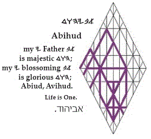

| dwhyba Abihud אביהוד | ||||||
|
As
we focus
a
on what we hear
b,
making use of
y
discernment
h
as we weigh
w
our perceptions
d,
fresh concepts
a
will envelop us
b,
fueling
y
our
imaginations
h;
and as their truths gain ascendency
w
in our hearts
d,
they will blossom forth as fervor
a.
Oddly,
we build
b
on approximate understandings of what we receive
y
in our lives
h
as we, simultaneously, wrestle with our curiosity
d
about the Father’s
a
interest
b
in our estimations
y!
Such distractions
h
surely have merit, but brush them aside
w.
Gematria
28
jk:
Numerology
28
jk
>
10
>
1
a:
Targum:
for he intends
a
that every soul
b
should discover, for itself
y,
that its life
h
is |
||||||
| Eliakim | ||||||
|